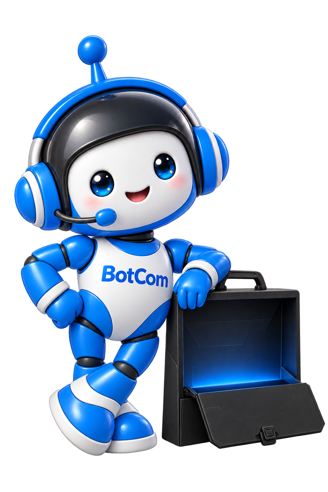
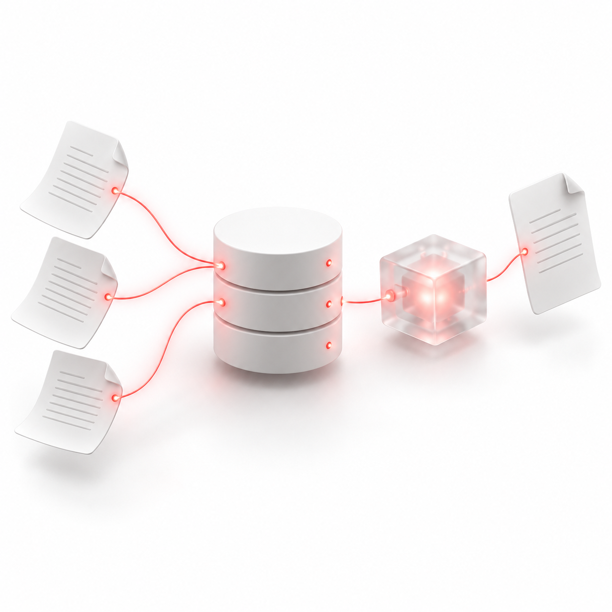

01 / RETRIEVAL DESIGN
RETRIEVAL ENGINEERING · FIELD NOTE
Hybrid Search vs. Vector Search: How to Choose
Compare exact-term matching and semantic retrieval, then combine results when the evidence supports it.
Search architectureRead note ↗
We build enterprise RAG systems and AI agents that turn scattered business knowledge into dependable, inspectable workflows.

Real business environments are messy. Documents disagree, permissions matter, questions are ambiguous, and systems need to be evaluated beyond a handful of impressive answers.
Small, curated datasets that make the happy path look easy.
Prompts selected because the system already knows how to answer them.
A fluent response without a clear way to inspect its evidence.
Mixed formats, duplicate files, versioning, and domain-specific language.
Relevant information must also be information the user is allowed to see.
Retrieval, answers, and consequential actions need evaluation and controls.
We focus on the layers that determine whether an AI system is useful outside a demo: relevant information, controlled execution, and a deployment model that fits the environment.

Documents → chunks → embeddings → retrieve → generate
Discuss this system ↗Hover over a discipline to reveal its live process.
On touch screens, tap to explore.
The architecture should follow the data, workflow, and operating constraints. Each layer has a job—and a way to be tested.
Connect documents and business data with source metadata and access boundaries intact.
A production system needs more than a compelling answer. It needs explicit boundaries, repeatable tests, and visibility into how it behaves.
Ground answers in relevant sources and make supporting evidence inspectable.
Test retrieval and response quality against realistic business questions.
Account for access boundaries as information moves through the system.
Use human review where consequential operations require it.
Make failures and behavior easier to investigate and improve.
The engineering approach adapts to the language, documents, permissions, and workflows of the business. Examples below are illustrative, not claims of existing deployments.
Help teams find the right policy wording, supporting documents, and internal guidance with traceable evidence and appropriate access controls.
Collaboration, focused research, careful implementation, and a clear path to delivery.
AI-generated illustrative scenes.
Compare exact-term matching and semantic retrieval, then combine results when the evidence supports it.
Separate retrieval quality from answer support, and test realistic questions before launch.
Carry identity and source permissions through retrieval, citations, caching, and tool actions.
A practical delivery process connects the business problem to architecture, evaluation strategy, and the operating environment.
Clarify the people, data, constraints, and questions that define the use case.
Tell us about your documents, data, or business process. Let's explore what a production-ready RAG system or AI agent could look like.